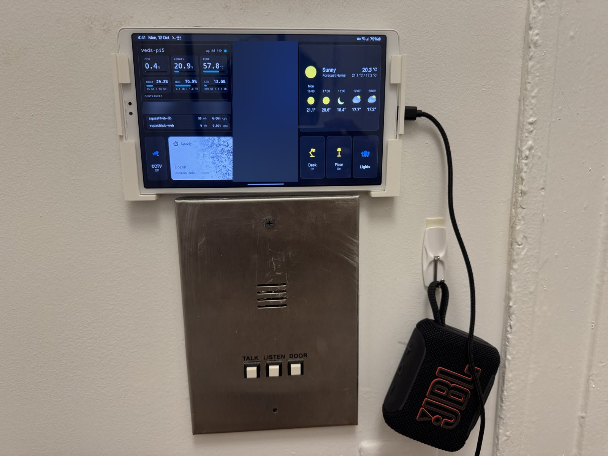
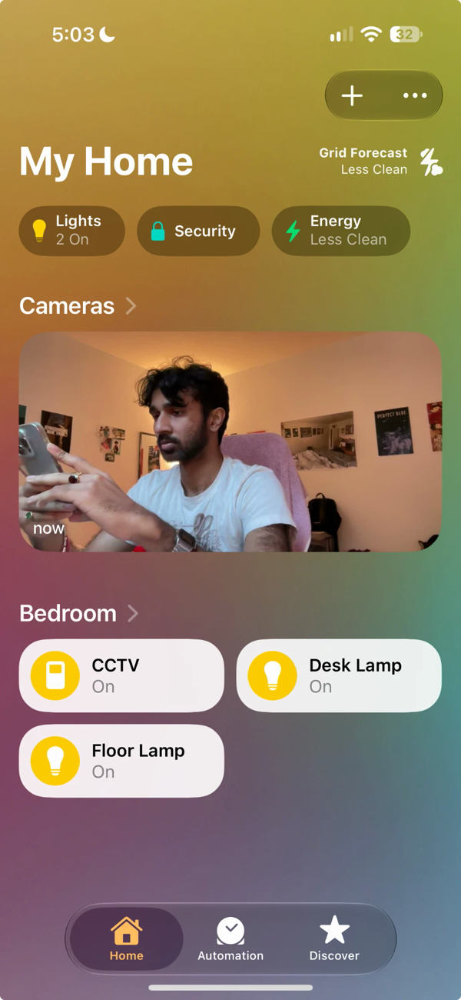
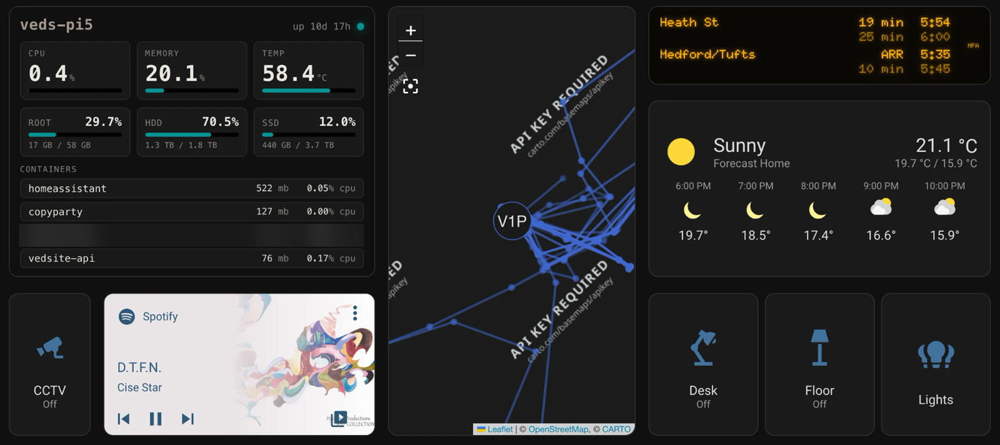
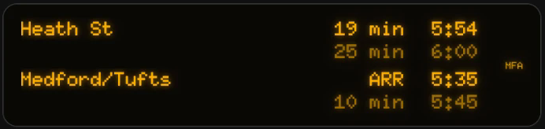
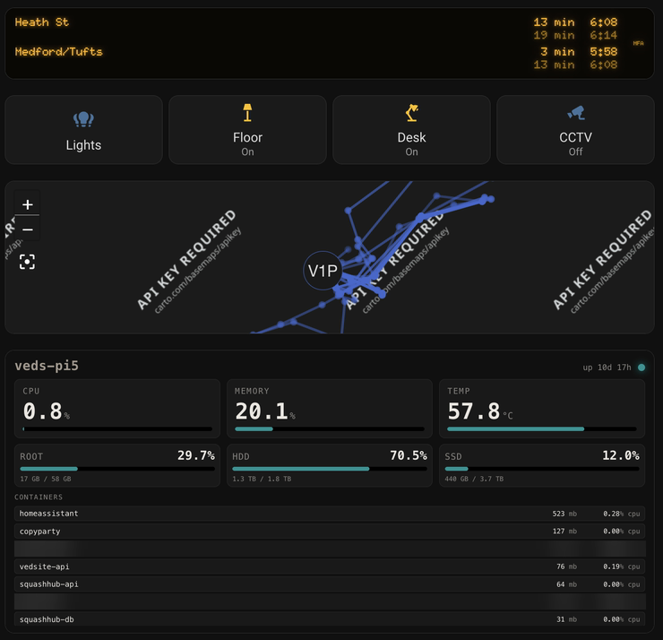

overview
My room runs on Home Assistant, self-hosted in Docker on my Pi 5 homelab. It controls my desk and floor lamps, knows whether I'm home, shows where my phone has been, plays Spotify, and can turn my MacBook into a security camera. I use it three ways: a Galaxy tablet mounted on the wall as a kiosk, a phone dashboard, and without looking at a screen at all, through NFC tags and Siri.

features
apple home
Everything also shows up in Apple's Home app through the HomeKit Bridge integration: both lamps, the CCTV switch, and the MacBook camera as a HomeKit camera. While CCTV is off the camera tile reads No Response. Flip the switch from the Home app and the feed appears a moment later, and tapping it opens a live view. Home Assistant is still the one doing the work; the Home app is just another remote for it.

the kiosk
The wall tablet runs one dashboard, laid out on a roughly 42-column grid (layout-card's grid layout, not the default Sections view, which can't place cards this precisely). The live panel for the homelab sits top left, the movement map runs down the middle, and the right side has the transit sign with the weather under it. Along the bottom, the camera switch and Spotify are on the left and the lights on the right: desk, floor, then both.
kiosk-mode hides Home Assistant's header and sidebar, but only for the tablet. The tablet signs in as its own Home Assistant user and kiosk-mode targets that user, so my own account still gets the full interface everywhere else. I couldn't do it with a URL flag: the Home Assistant Android app ignores URL paths and always opens the signed-in user's default dashboard.

The tablet itself, and the 3D-printed mount that holds it, are on the wall mount page.
the transit sign
The top right of the kiosk is a copy of the countdown signs in MBTA stations: amber dot-matrix letters on black, with a slight glow. It shows the next two Green Line E trains each way from Museum of Fine Arts, how many minutes until each one arrives, and the time it gets in. The second train in each direction is dimmed, and a train pulling in reads ARR, the same as on the platform.

The MBTA's API needs a key, so the tablet never calls it directly. A route in the same Flask API that runs my misc page fetches predictions and service alerts, picks the station, and returns only the rows the sign needs. Destination names come from the MBTA's own data instead of being typed in. Each station's answer is cached for 20 seconds, so the number of calls to the MBTA stays the same however often the tablet asks. Like the homelab panel, the route only answers inside my tailnet, and the sign itself is a plain HTML/CSS/JS page that Home Assistant serves into an iframe.
the phone dashboard
A single-column version for my phone. Two things fought me here. Setting cards to
100vh behaved differently in the app than in a browser, so every row has a fixed
height instead. And the homelab panel sits in an iframe, which swallowed scrolling until the iframe
was set to only claim vertical panning, with the scrolling moved inside the panel instead of the
page body.
The raw YAML editor also kept mangling the CSS selectors I use for styling, so I edit this dashboard's stored JSON directly, with Home Assistant stopped, using a short Python script.

the location bug
For a while my location only updated while I was on home Wi-Fi. The iPhone app's most private location mode will only send updates to a server it can reach securely, and off my home network it had nowhere to send them. Giving Home Assistant a proper HTTPS address inside my tailnet, and telling it to trust the proxy in front of it, fixed it. It's still never reachable from the open internet.
construction
Home Assistant runs as a plain Docker container rather than Home Assistant OS, using the host's network so it can discover the ESPHome plugs and advertise the HomeKit bridge over mDNS. Its config lives on the Pi's SSD, so it's in the nightly backup, and every config change gets a syntax check before a restart.
architecture
Everything goes through Home Assistant on the Pi: the tags and Siri trigger the same scripts the
dashboards do, so there's one place where a light's state lives. The transit sign is the
exception, since it has no state to keep: it asks the API directly.
Source? My config isn't public since it describes my home network. Happy to talk
through any part of it though. The API behind the transit sign is on my
GitHub.